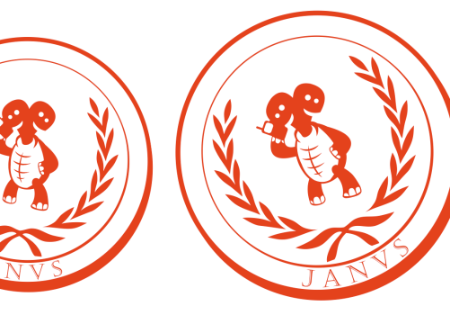

Port your application to various Java and other handsets with J2ME Polish and it's innovative Janus technology.

J2ME Polish allows you to develop,
design and build your application on
the platform of your choice:
Windows, Mac OS X, Linux or any
other Java enabled operating system.
Since J2ME Polish is based on Ant -
the Java standard for building
applications - you can use it with
every IDE.
For Eclipse and NetBeans we have
created plugins that speed up your
development further.
J2ME Polish supports the global Java ME/J2ME standard and runs on all MIDP enabled handsets. You can also target BlackBerry, Palm, DoJa and WIPI devices with J2ME Polish.
Windows Mobile, iPhone and Android platforms are supported natively - you can implement your application in Java once and J2ME Polish ports it automatically into native applications without having to install a Java Virtual Machine on those platforms. Your application integrates itself like any other native application on your target platform!